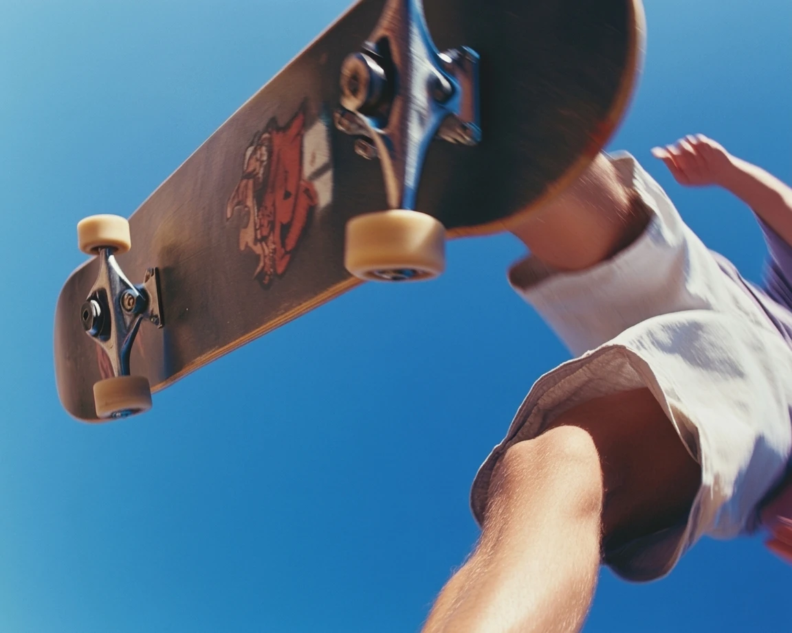
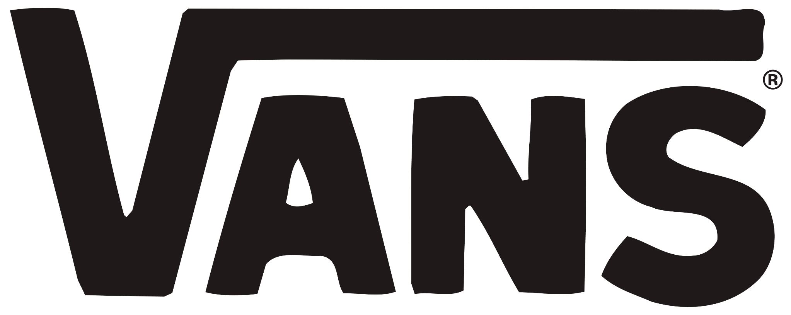
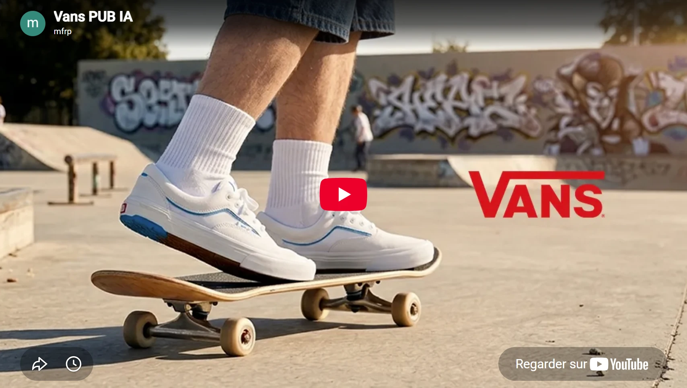
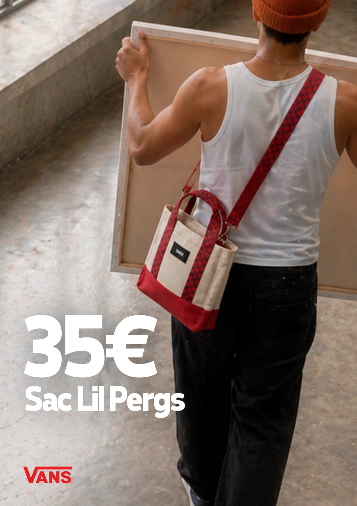
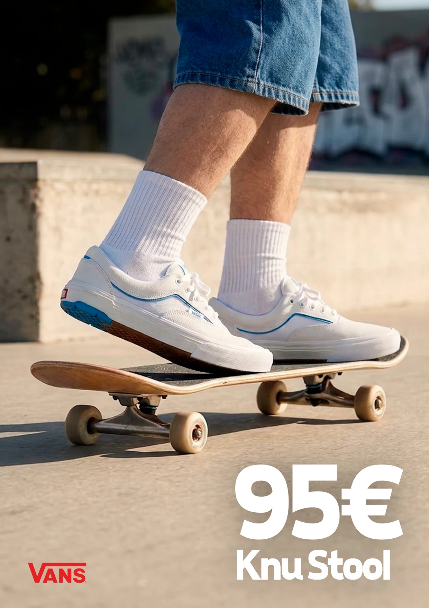
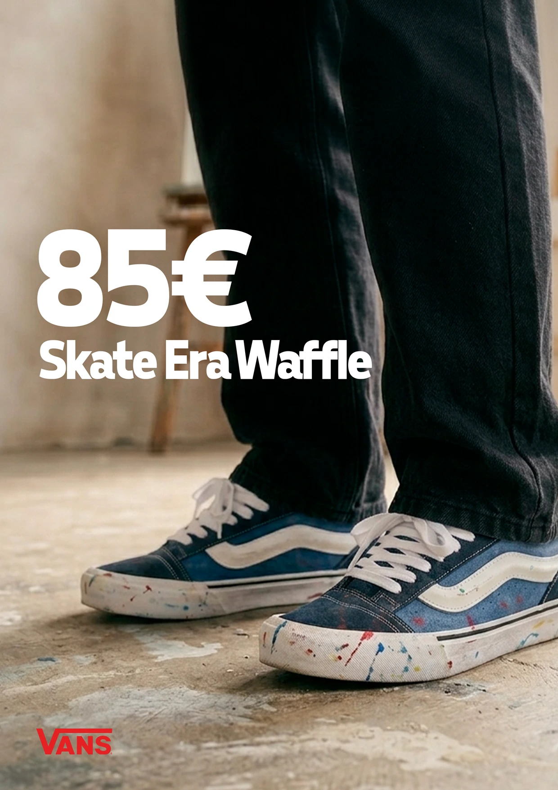
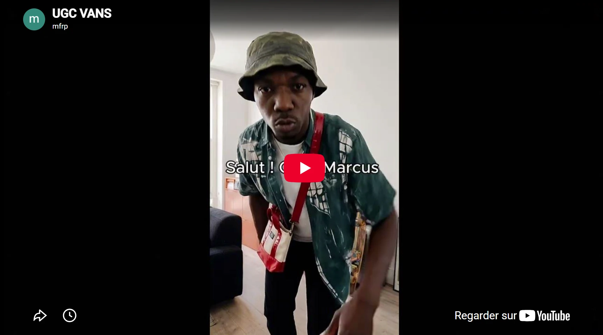
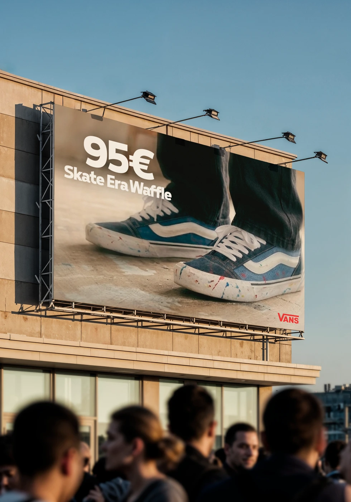
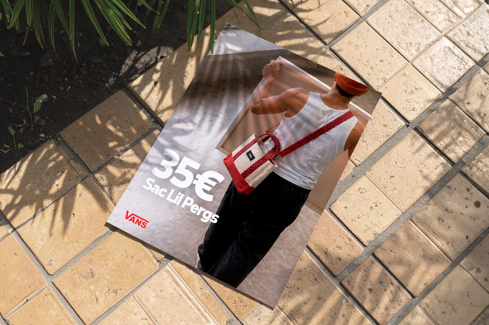

Off the Canvas
Direction artistique · IA · Print · Digital · Vidéo · Shooting

ClientVans
Off the Canvas imagine une campagne où une toile peinte circule d’un artiste à un skateur, jusqu’à révéler progressivement l’univers Vans. Le projet s’appuie sur des outils d’IA pour générer visuels, ambiances et contenus, puis sur un travail de montage et de direction artistique pour leur donner cohérence et impact.
Pensé comme un écosystème de campagne, il réunit un film principal, des visuels produits, des déclinaisons print et digitales, des contenus pour les réseaux sociaux ainsi qu’une story UGC portée par un influenceur fictif. L’objectif : montrer comment l’IA peut nourrir une narration de marque complète lorsqu’elle est guidée par une intention visuelle forte.






